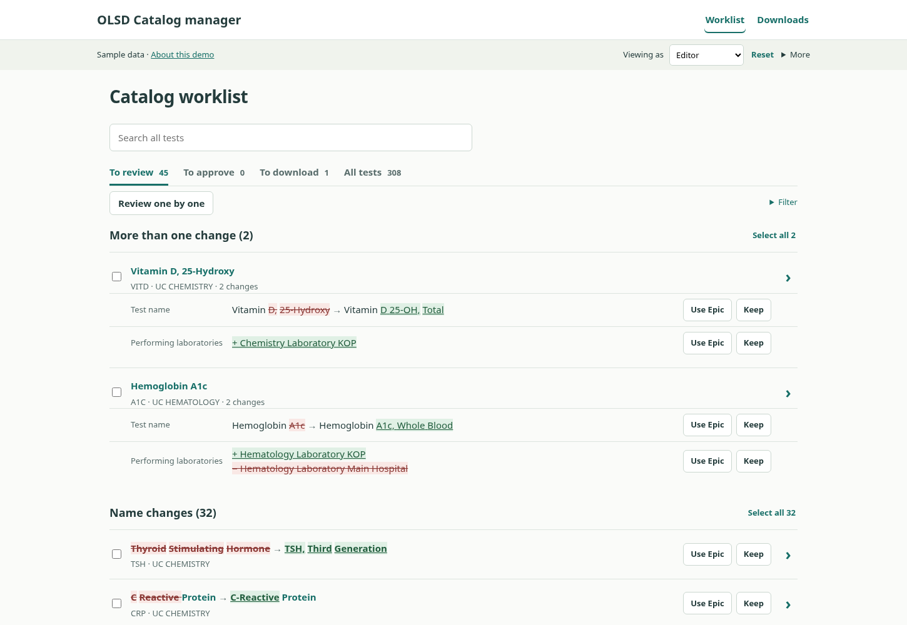
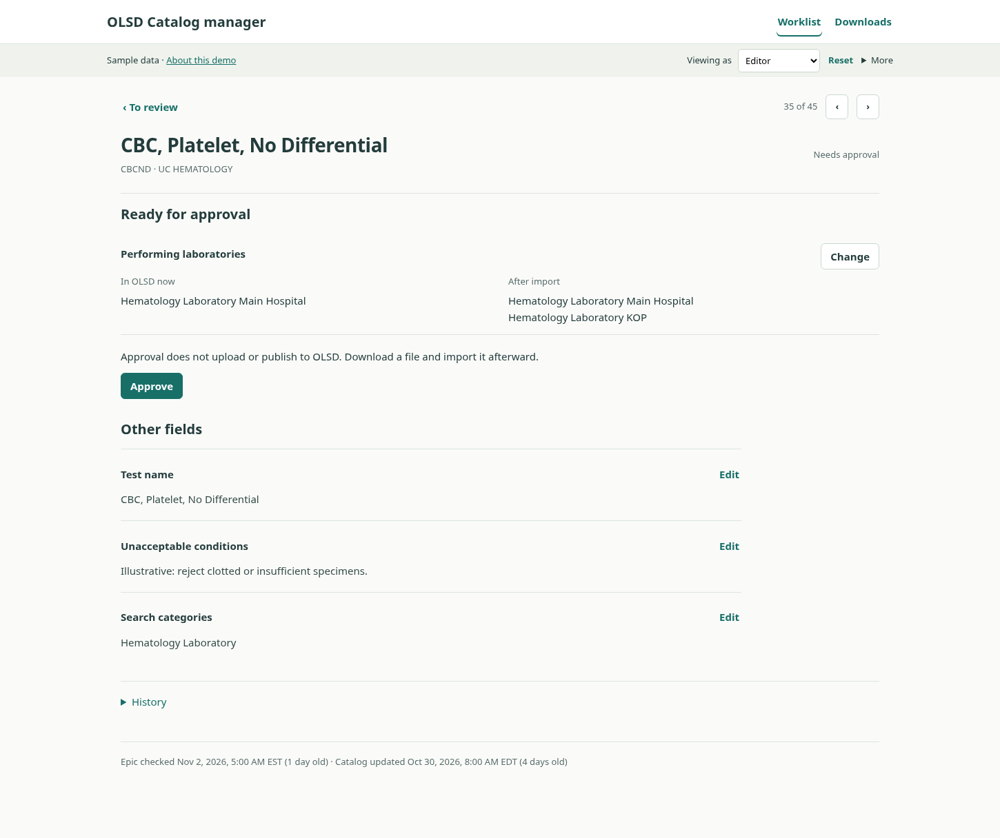
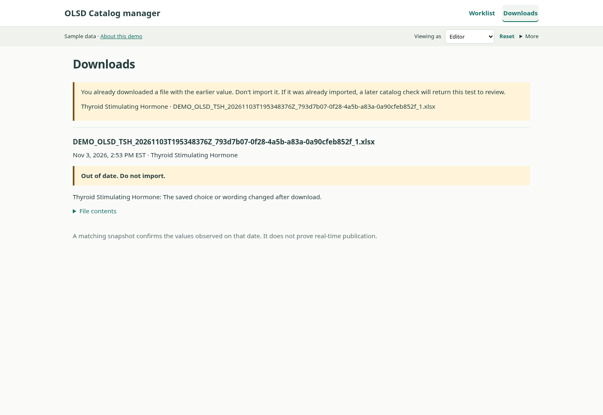
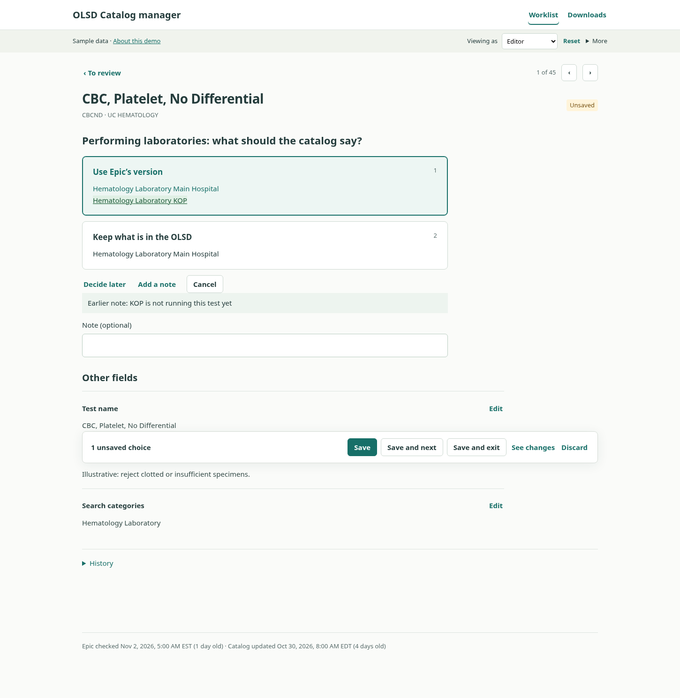
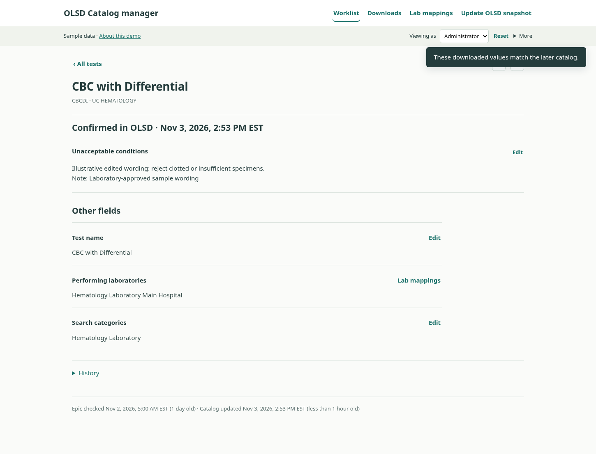
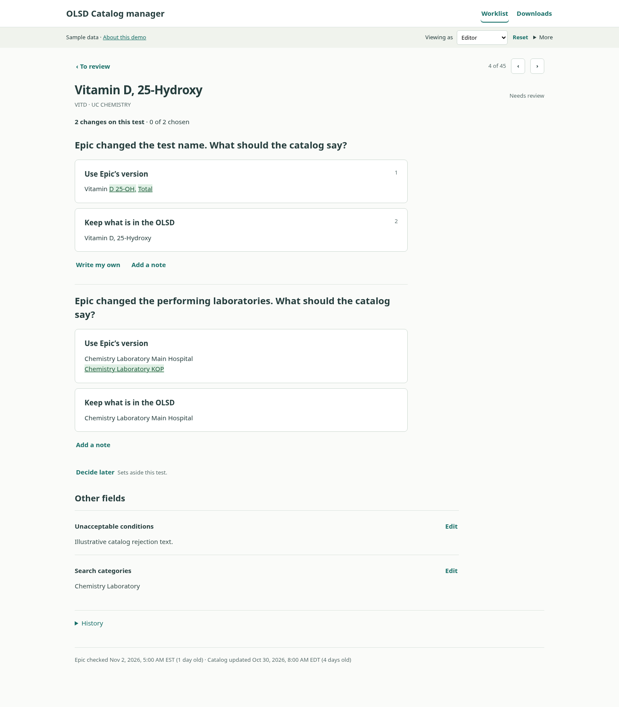
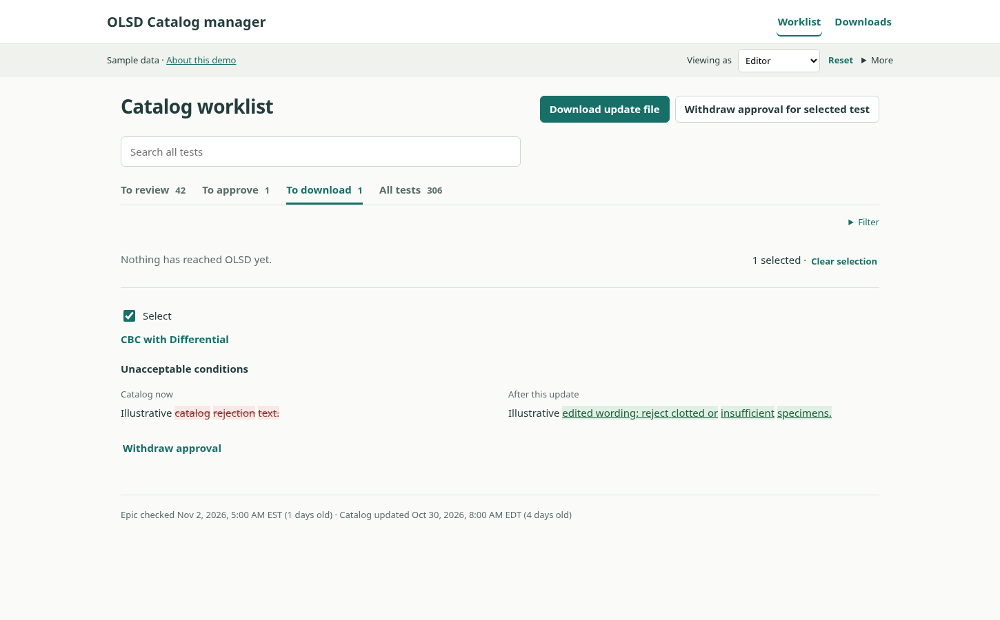
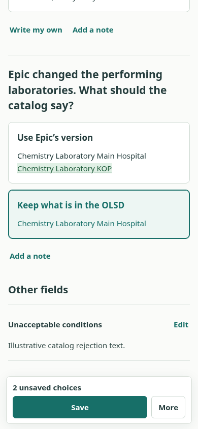
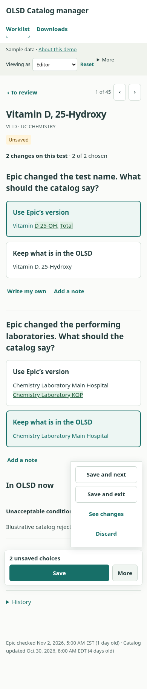

OLSD demo: tasks to try
Open the demo · Read the code · Dated verification · Browser checks
Sample data only. No live Epic or OLSD connections. Do not import these sample Excel files into a real catalog.
- Choose Reset in the sample-data strip.
- Open CBCND, keep OLSD labs, and Save. Choose Change, then Decide later and Save. The test should appear under Set aside with Decide now and no approval action. Repeat after using and approving Epic’s labs.
- Save a keep decision with a note, reopen it, and choose Epic instead. The note box should clear, with Earlier note above it. Save and approve; inspect History to find the old reason.
- Approve and download TSH. Choose Change and keep OLSD, then Save. In Downloads, the earlier file should say Out of date. Do not import. and have no Download again action. As Administrator, load that file’s matching example snapshot; TSH should return to review.
- Approve TSH and CRP together and download their shared name update. Change only TSH afterward. The file should name the affected test, and CRP should return to To download for a clean replacement.
- On VITD, choose Epic’s name and set labs aside. The saved section should explain why approval is unavailable and name the waiting lab field.
- Select three tests for Review one by one, skip one, and finish the other two. The ending should count what was saved and what still needs a choice. Use Go to approvals and Go to downloads for the separate later steps.
- Choose one inline value, open that same test, and return to the list. The staged choice and Save should remain without a dialog. With other unsaved tests, navigation must still warn. On a phone, check the compact save bar and More.
Keys: 1 chooses Epic; 2 keeps what is in the OLSD; Ctrl/Cmd+S saves. Shortcuts do not approve.
379 browser checks pass, with no JavaScript errors. The checks cover saved-choice editing, partial and deferred choices, sent-back wording, review/approval walkthroughs, originating-list links, and phone controls, as well as one row per test, section totals, navigation in displayed order, every open field on the test page, partial saves, keyboard decisions, phone layout, and bulk actions leaving free text open. See dated verification for the full-suite result.
The checks measure a simple choice saved in 2 clicks, one change downloaded in 5 clicks, and 32 name changes downloaded in 7 clicks. Choosing never saves; saving never approves.
Terms
OLSD is the online laboratory test directory maintained in this project. A catalog steward is a person who maintains its content; the demo calls this role Editor. Posit Connect is the institution’s planned R/Shiny hosting platform. Helix is the project’s existing Epic-derived reporting service. A pin is a versioned stored dataset managed with the R pins package; this demo uses browser storage instead.
Implementation and production limits
This is a static, sample-data design prototype with 308 tests. Roles are simulated, not authentication. The browser keeps saved choices; Reset restores the sample catalog. The storage key remains olsd-workflow-prototype-v7-test-by-test-20261103; this update preserves previously saved work.
The underlying safeguards still retain explicit choices, exact approval values and source dates, approver/time, source-change invalidation, and per-file download history. Downloads record browser download initiation; the app cannot prove that a person saved or imported a file. A matching later catalog does not prove real-time publication. An upload cannot remove an existing category; an administrator must arrange that separately.
Production still needs authenticated server authorization, institutional connections, scheduled checks, real catalog upload, identity validation, safe shared writes, backups and migration, clinical review, and vendor acceptance. The importer’s treatment of Test Managed By, Use ARUP Test Name, and ARUP Test Number—including blanks—must be confirmed. Real control values must come from the uploaded catalog.
Only sample UI code, screenshots, and checks are published here. No uploaded handoffs, SQL, private workbooks, archived pins, credentials, or browser-local reviewer changes are included.
Screen examples
Changes in the worklist

One saved comparison

Retired download

Earlier note

Confirmed in OLSD

All changes for one test

Saved changes awaiting approval

Select downloads or withdraw approvals

The next step after download

Compact phone save controls

Phone layout
